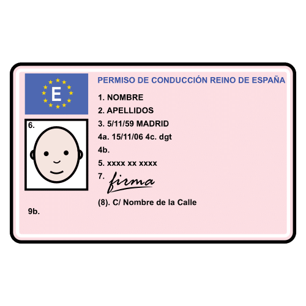
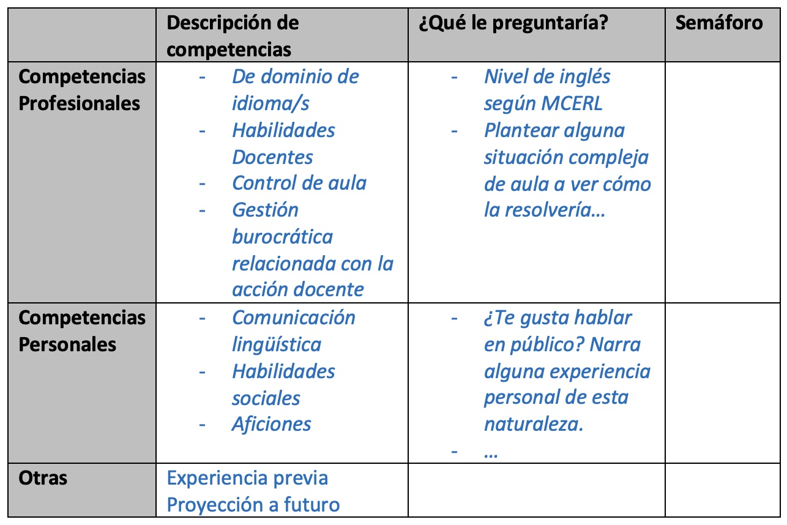
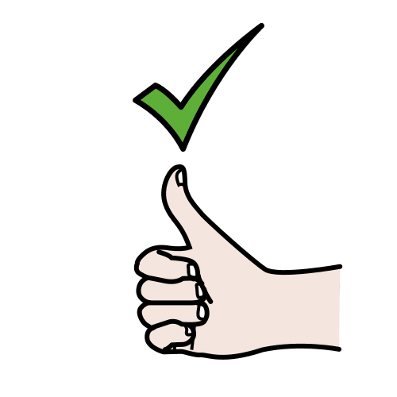
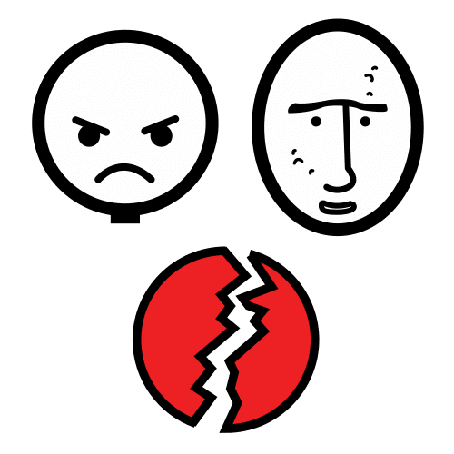
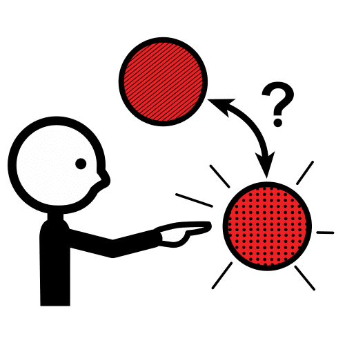
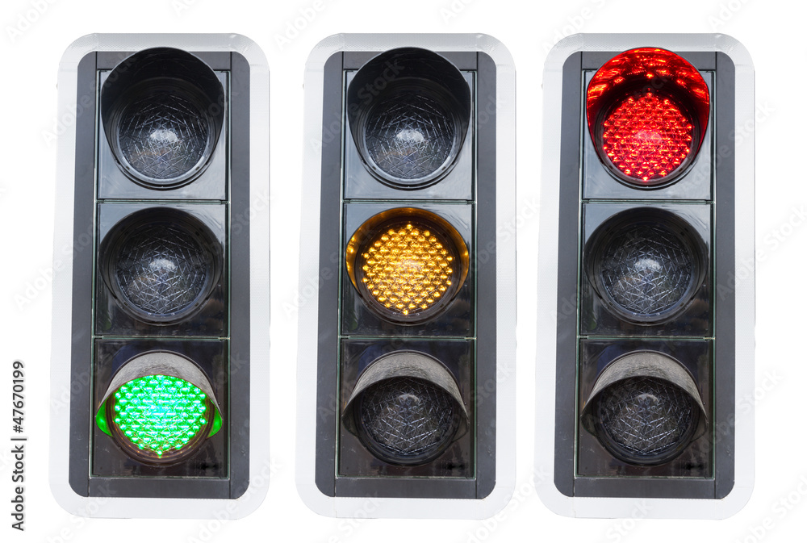
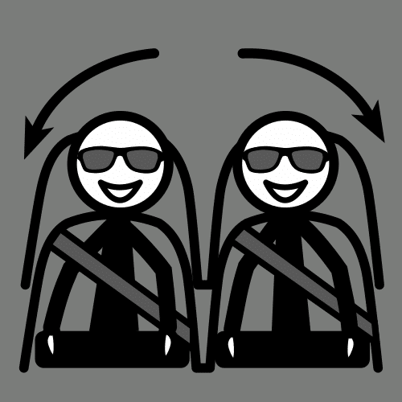
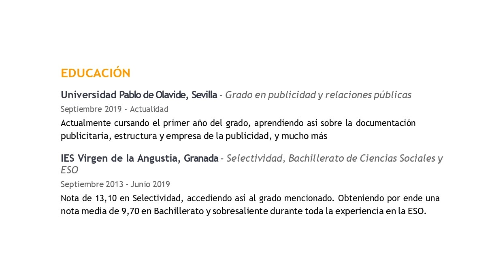
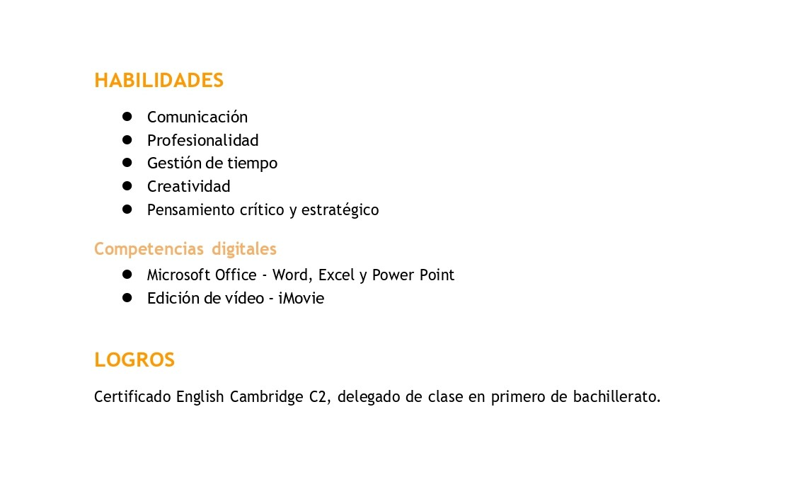
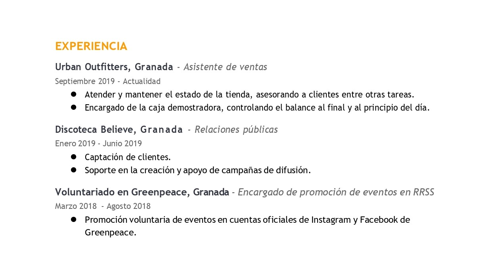

Diccionario
Departamento
Definición:
Parte en que está dividida una organización o empresa.
Ejemplo:
Este es el departamento de becas de la universidad.
Definición:
Parte en que está dividida una organización o empresa.
Ejemplo:
Este es el departamento de becas de la universidad.
 Ahora eres un “aspirante novel” a un puesto de trabajo. Con la siguiente tarea vas a darte cuenta de cuánto sabes ya sobre el mundo laboral y sobre cómo se consigue un buen puesto de trabajo. Igual que cuando te sacas el carnet de conducir, después tendrás que ensayar para enfrentarte al examen teórico. Y cuando hayas superado y conozcas muy bien la teoría del CV, podrás presentarte al examen práctico: la elaboración de tu Currículum Vitae Digital.
Ahora eres un “aspirante novel” a un puesto de trabajo. Con la siguiente tarea vas a darte cuenta de cuánto sabes ya sobre el mundo laboral y sobre cómo se consigue un buen puesto de trabajo. Igual que cuando te sacas el carnet de conducir, después tendrás que ensayar para enfrentarte al examen teórico. Y cuando hayas superado y conozcas muy bien la teoría del CV, podrás presentarte al examen práctico: la elaboración de tu Currículum Vitae Digital.
Ahora imagina que quieres conseguir un puesto de trabajo.
Vas a realizar una tarea que te ayudará a comprobar lo que sabes sobre cómo conseguir un buen trabajo.
Para sacarte el carnet de conducir, te preparas un examen de teoría y después realizas unas pruebas prácticas.
Vamos a hacer lo mismo para aprender a hacer un Currículum Vitae Digital:
1º aprenderás la teoría para elaborarlo.
2º practicarás cómo hacerlo.

Definición: Tarjeta de identificación importante con nuestros datos personales.
Ejemplo: La policía me pidió que le enseñara mi carnet.
.jpg) Definición: Sistema de signos que utiliza una comunidad para comunicarse oralmente o por escrito.
Definición: Sistema de signos que utiliza una comunidad para comunicarse oralmente o por escrito.
Ejemplo: Estudio inglés en la escuela de idiomas.

Ahora vamos a realizar la primera actividad grupal. Para ello, nos dividiremos en grupos de 4. Cada equipo representará al departamento de RRHH de un centro de idiomas asociado al Instituto Cervantes que ofrece clases de Español como Lengua Extranjera (ELE). Debéis imaginar que necesitáis incorporar a la plantilla del centro un profesor o profesora de esta materia (ELE) y disponéis de los CV que aparecen a continuación. Vuestra tarea consiste en seleccionar a la persona más adecuada de entre todos los aspirantes al puesto.
Aspirante 1
Aspirante 2
Aspirante 3
Aspirante 4
Aspirante 5
¿Cómo seleccionar al mejor candidato/a?
Los perfiles profesionales se definen en torno a competencias; en el fondo las que el trabajador debe tener para desarrollar un buen desempeño.
Antes de valorar los CV podría ser interesante definir el perfil competencial que buscamos y las preguntas que podríamos utilizar para explorar las características de cada uno de los candidatos. Te animamos a pensar en equipo y definir tanto el perfil competencial como las preguntas que se le podrían formular a cada uno de los candidatos.
En la última columna incluiremos la conclusión que tengamos de la exploración en base a la rutina de pensamiento “El semáforo” que presentaremos en el siguiente paso del REA.
Para que os resulte más sencillo realizar la selección, podéis ayudaros de esta plantilla.

Tras ver o leer cada currículum, os tenéis que poner de acuerdo en cuáles son los puntos fuertes de cada uno y los errores que detectáis. Según vuestras apreciaciones, debéis llegar a una selección consensuada y argumentada que expondrá la persona portavoz del grupo a toda la clase.
Adecuada/o
 Definición: Algo que es apropiado, acertado o idóneo para alguien o algo.
Definición: Algo que es apropiado, acertado o idóneo para alguien o algo.
Ejemplo: Este traje es adecuado para la fiesta de disfraces.
Definición:
Parte en que está dividida una organización o empresa.
Ejemplo:
Este es el departamento de becas de la universidad.
.png) Definición: Sistema de signos que utiliza una comunidad para comunicarse oralmente o por escrito.
Definición: Sistema de signos que utiliza una comunidad para comunicarse oralmente o por escrito.
Ejemplo: Estudio inglés en la escuela de idiomas.
Vamos a hacer grupos de 4 personas.
Tenemos que imaginar que trabajamos en el departamento encargado de contratar a los trabajadores de un centro de idiomas.
Vamos a buscar a una persona para dar clases de Español Lengua Extranjera.
Tenemos que leer muy bien los currículums que tenemos a continuación y elegir a la persona que creamos que es la más adecuada para este trabajo.
Aspirante1
Aspirante 2
Aspirante 3
Aspirante 4
Aspirante 5
Aquí tienes esta plantilla que te puede ayudar a anotar la información más importante de cada persona que quiere conseguir el puesto de trabajo.
Para elegir a la persona más adecuada, tienes que prestar atención.
Vas a tomar nota de las características de los aspirantes.
Aceptaremos las características positivas que tenga cada aspirante y rechazaremos las características negativas.
Una vez anotadas esas características, hablarás con tus compañeros y compañeras del grupo.
Tomaréis la decisión de elegir a la persona que os parezca que tiene las características más adecuadas para realizar ese trabajo.
El compañero o compañera que sea portavoz en tu grupo, explicará en voz alta por qué habéis elegido a esa persona
Definición: Algo que es apropiado, acertado o idóneo para alguien o algo.
Ejemplo: Este traje es adecuado para la fiesta de disfraces.
Definición: Parte en que está dividida una organización o empresa.
Ejemplo: Este es el departamento de becas de la universidad.
Definición: Cualidad o rasgo que describe a una persona o a algo.
Ejemplo: Una característica tuya son tus ojos azules.
Definición: Realizar una elección sobre algo.
Ejemplo: Tuvimos que decidir rápidamente sobre lo que queríamos comer.
 Definición: Es la persona que ha sido elegida para representar a un grupo y hablar en su nombre.
Definición: Es la persona que ha sido elegida para representar a un grupo y hablar en su nombre.
Ejemplo: El portavoz tiene 5 minutos para hablar y dar su propuesta
 Definición: Acción de mostrarse en contra de algo que se le ofrece o propone a una persona.
Definición: Acción de mostrarse en contra de algo que se le ofrece o propone a una persona.
Ejemplo: Mi hermano ha rechazado la ayuda para aprender inglés.
Definición: Sistema de signos que utiliza una comunidad para comunicarse oralmente o por escrito.
Ejemplo: Estudio inglés en la escuela de idiomas.
Para llegar a una meta, es conveniente que seas un buen o buena estratega. Es decir, tener métodos, técnicas, “trucos” para llegar antes o de forma más fácil donde tú quieres.
Ahora te voy a enseñar una estrategia, ¡Aprovéchala para poder alcanzar tu reto!
Esta estrategia se llama “reflexión”, y nos ayudará en la consecución de nuestro reto porque para llegar a elaborar y diseñar nuestro currículum vitae, necesitamos primero reflexionar sobre qué aspectos lo componen, qué debemos incluir en ellos...y eso requiere de un proceso de reflexión.
Para empezar a utilizar esta estrategia, pincha en el siguiente enlace que te llevará a la página de la guía donde se explica “la rutina de pensamiento para iniciar y explorar ideas: el semáforo”.
Utiliza la estrategia detallada para responder a las siguientes preguntas en tu cuaderno:

¿Qué sé o qué entiendo sobre los currículums tras haber realizado la actividad grupal?
¿Qué dudas me surgen tras haber realizado la tarea con mi equipo?
¿Qué me falta aprender por ahora?
Ahora te dejamos solo ante el simulador de conducción. Recuerda cómo eran los currículums analizados y elige una de las siguientes actividades que te proponemos a continuación. Recuerda que esta actividad deberás hacerla de forma individual.
Has practicado un poco con los currículums como si fuera un simulador de conducción.
Ahora vamos a poner en práctica nuestra pequeña experiencia eligiendo 1 de estas actividades:
.jpg) Definición: La práctica es la acción que se desarrolla con la aplicación de ciertos conocimientos.
Definición: La práctica es la acción que se desarrolla con la aplicación de ciertos conocimientos.
Ejemplo: Voy a poner en práctica lo que he aprendido sobre estiramiento del cuerpo.
Definición:Es un dispositivo que sirve para reproducir las condiciones propias de una actividad.
Ejemplo: Fui a la feria y me monté en una atracción que era un simulador de conducción.

¿Te preocupa no hacer un currículum idóneo para tu futuro puesto de trabajo?
¿O no tener las habilidades de los aspirantes que hemos conocido?
No te precipites y vayamos poco a poco.
Al final de este proceso, todas tus dudas quedarán resueltas.
¡Recuerda que esto es solo un simulador!
En este ejercicio se muestra las distintas partes de un currículum , que debes ordenar al final del ejercicio.
PARTE 1

PARTE 2

PARTE 3

PARTE 4

Ahora te toca a ti. Obsérvate a ti mismo y selecciona y haz una lista de las cualidades y habilidades que destacarías sobre ti en un currículum.
Elige a un familiar cercano con una trayectoria profesional que te interese. Pregúntale cómo ha sido su vida laboral hasta llegar a ese puesto y resume esa información en una narración breve que podrás escribir en tu cuaderno de clase.
Obra publicada con Licencia Creative Commons Reconocimiento No comercial Compartir igual 4.0